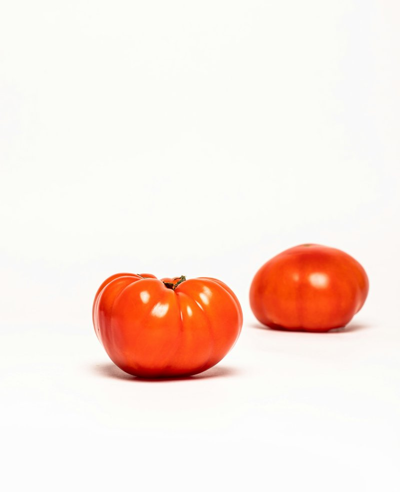
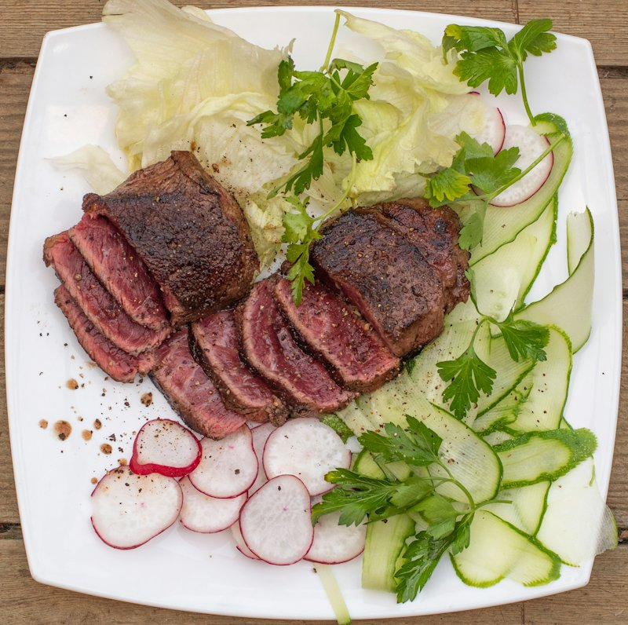
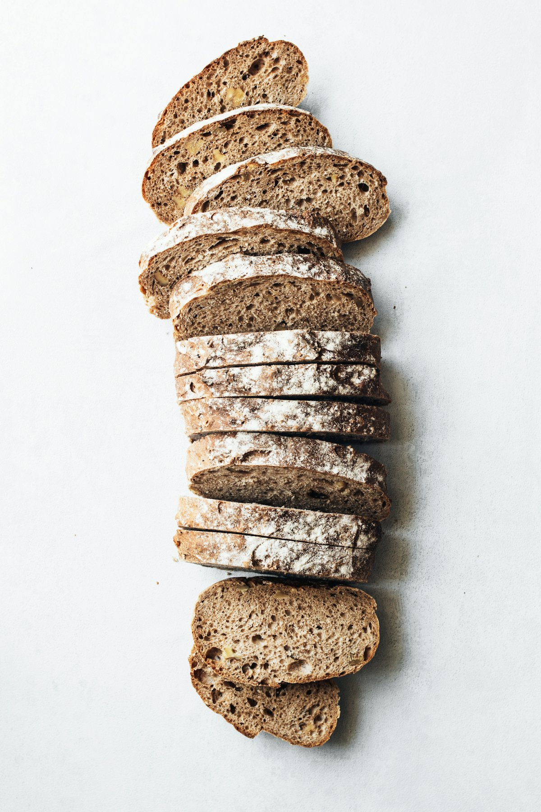

Gesamtlänge
Liegt wie ein klassisches Tafelmesser in der Hand.
ANIRIUS® 2-in-1 Besteckmesser
Feiner Wellenschliff oben, grober unten. Ein Dreh, und du hast das richtige Messer in der Hand.
01Die feine Seite
Für saubere, glatte Schnitte durch Tomaten, Obst, Gemüse und weiche Brötchen. Nichts reißt, nichts quetscht.
Umdrehen
Feine Seite obenGrobe Seite oben
02Die grobe Seite
Die zweite Seite packt Kruste, Baguette, Pizza und Steak mühelos. Kein Messerwechsel, kein zweites Besteck.
03Das Original
Jedes ANIRIUS® Messer trägt das Zeichen auf der Klinge, per Laser graviert. So weißt du, dass du das Original in der Hand hältst.
Im Einsatz
Brot-, Tomaten-, Steak- und Tafelmesser in einem Stück poliertem Stahl.




Details
Liegt wie ein klassisches Tafelmesser in der Hand.
Fein oben, grob unten. Du wählst mit einem Dreh.
Rostfrei und spülmaschinenfest.
Ein komplettes Set für den ganzen Tisch.
6er-Set in Geschenkbox
39,95 €inkl. MwSt.
Fragen
Die feine Seite für Tomaten, Obst, Gemüse und weiche Brötchen. Die grobe Seite für Kruste, Baguette, Pizza und Steak.
Ja. Die Klinge ist aus Edelstahl 420 und hochglanzpoliert.
Sechs ANIRIUS® 2-in-1 Besteckmesser in einer Geschenkbox.
Am ANIRIUS® Zeichen, das per Laser in die Klinge graviert ist.